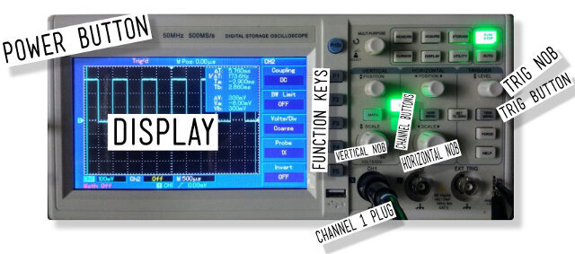
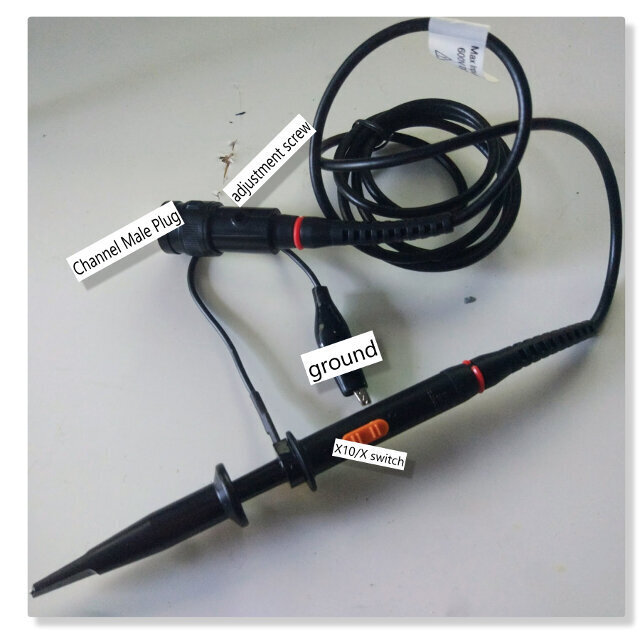

index
ASSIGNMENT : Electronics Design
For this week we must to use the equipment in our lab for observe the operation of a micro- controller.
WORKFLOW :
Divided works - watch tutorials - Callibrate OSCILLOSCOPE - Make Testers
TOOLS USED
THE LAB EQUIPMENT
Our Lab have an Oscilloscope, multimeters and a Regulated Power Supply . So we decided to begin with the oscilloscope.
1. First of all we learn some things trought tutorials watched. Both watched the same tutorial from Spark Fun : oscilloscope
There you can learn trought a helpful pic with basic concepts such as his anatomy, how to read the display and fun videos explaining different test with the probes.
2.. After to watch the tutorial we learned some things about them :

DISPLAY : Is where we can to observe the signal operation about our circuits. Every oscilloscope display should be criss-crossed with horizontal and vertical lines called divisions. The scale of those divisions are modified with the horizontal and vertical systems. The vertical system is measured in “volts per division” and the horizontal is “seconds per division”.
PIC OUR DISPLAYTHE PROBES : Probes are single-input devices that route a signal from your circuit to the scope. They have a sharp tip which probes into a point on your circuit. The tip can also be equipped with hooks, tweezers or clips to make latching onto a circuit easier. Every probe also includes a ground clip, which should be secured safely to a common ground point on the circuit under test.

PRACTICES
1. CALLIBRATING THE PROBE / ADJUSTING COMPESATION CAPACITOR

a. On the probe select to X10;
b. Connect the probe to channel one plug;
c. Turn on oscilloscope
d. Make sure only channel one is on, click on CH2 button until its off and the other way around on CH1 button;
e. Select DC coupling with the F1 key;
f. Press button F4 to select 10X on probe mode;
g. Press trig/menu button and select type as "edge" and source CH1
h. Select slope as "Rise"
i. Adjust the Vertical and horizontal knobs until you see the wave
j. If wave is moving adjust trig nob until it stops
k. To calibrate the probe adjust the screw on the base of the probe until the wave is square.
2. OBSERVING HOW TO OPERATE A MICRO- CONTROLLER
For this practice we used the boards designed for this week, the redraw about hello board so we must tofollow some steps described below. We began with Lucio´s board with the idea to try a 2nd Attempt with Pilu ´s board :
1. After we programmed the hello board with the basic code for blink the led , we attached the alligator clip board´s ground and the probe to the pin where is attached the led.
PIC ABOUT ATTACHED (LUCIO Y PILU) PIC HELLO BOARD ATTACHED TO THE COMPUTER (LUCIO Y PILU)2. Next we pressed “Auto-Set” for show how the led signals is working :
PIC ABOUT OSCILLOSCOPE LED DISPLAY3. We observe how the led is blinking in time so we found the is at
When finnish with Lucio´s board test Pilu´s hello board
CONCLUSIONS3. TESTERING WITH MULTIMETER
Things that we know about this tool has three parts:
The selection knob allows the user to set the multimeter to read different things such as milliamps (mA) of current, voltage (V) and resistance (Ω).
Two probes are plugged into two of the ports on the front of the unit. COM stands for common and is almost always connected to Ground or ‘-’ of a circuit. The COM probe is conventionally black but there is no difference between the red probe and black probe other than color. 10A is the special port used when measuring large currents (greater than 200mA). mAVΩ is the port that the red probe is conventionally plugged in to. This port allows the measurement of current (up to 200mA), voltage (V), and resistance (Ω). The probes have a banana type connector on the end that plugs into the multimeter. Any probe with a banana plug will work with this meter. This allows for different types of probes to be used.
Our experience with multimeter is better so we decided to practice some important testers that everyone must to do when a circuit board is fabricated. So first is measure continuity, attaching the probes to each traces demostrating that every electronic component is attached well.
Continuity testing is the act of testing the resistance between two points. If there is very low resistance (less than a few Ωs), the two points are connected electrically, and a tone is emitted. If there is more than a few Ωs of resistance, than the circuit is open, and no tone is emitted. This test helps insure that connections are made correctly between two points. This test also helps us detect if two points are connected that should not be.
Continuity is quite possibly the single most important function for embedded hardware gurus. This feature allows us to test for conductivity of materials and to trace where electrical connections have been made or not made.
Set the multimeter to ‘Continuity’ mode. It may vary among DMMs, but look for a diode symbol with propagation waves around it (like sound coming from a speaker).
PIC DOING THE WORKThe other exercise was "Measure the Voltage" :
To start, let’s measure voltage on a AA battery: Plug the black probe into COM and the red probe into mAVΩ. Set the multimeter to “2V” in the DC (direct current) range. Almost all portable electronics use direct current), not alternating current. Connect the black probe to the battery’s ground or ‘-’ and the red probe to power or ‘+’. Squeeze the probes with a little pressure against the positive and negative terminals of the AA battery. If you’ve got a fresh battery, you should see around 1.5V on the display (this battery is brand new, so its voltage is slightly higher than 1.5V).
PIC ABOUT ITMeasuring our micro- controllers voltage:
PIC LUCIO´S BOARD PIC PILU´S BOARD